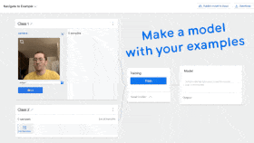
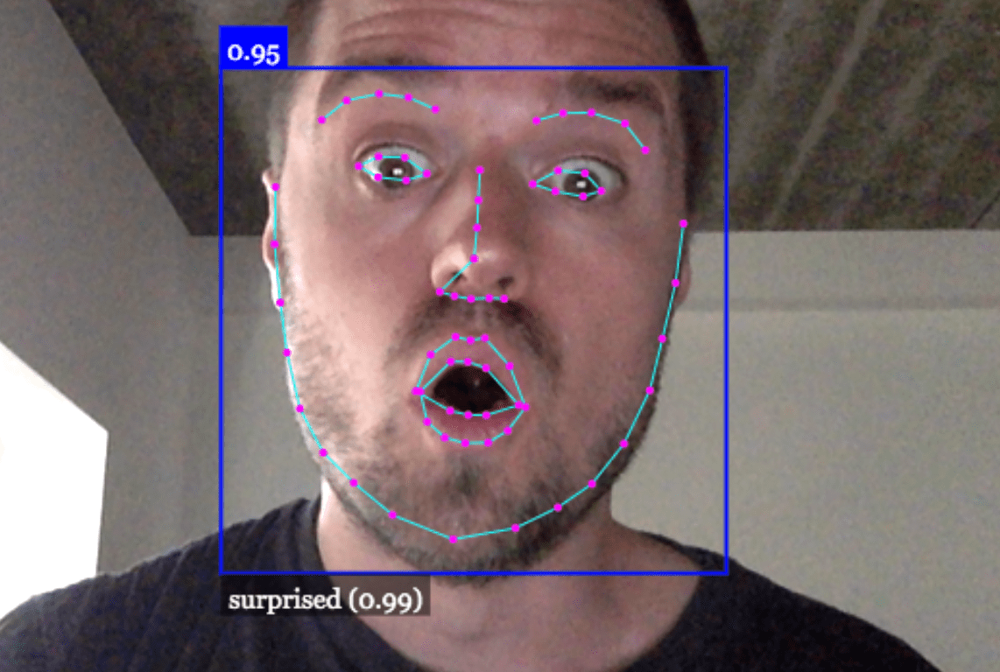
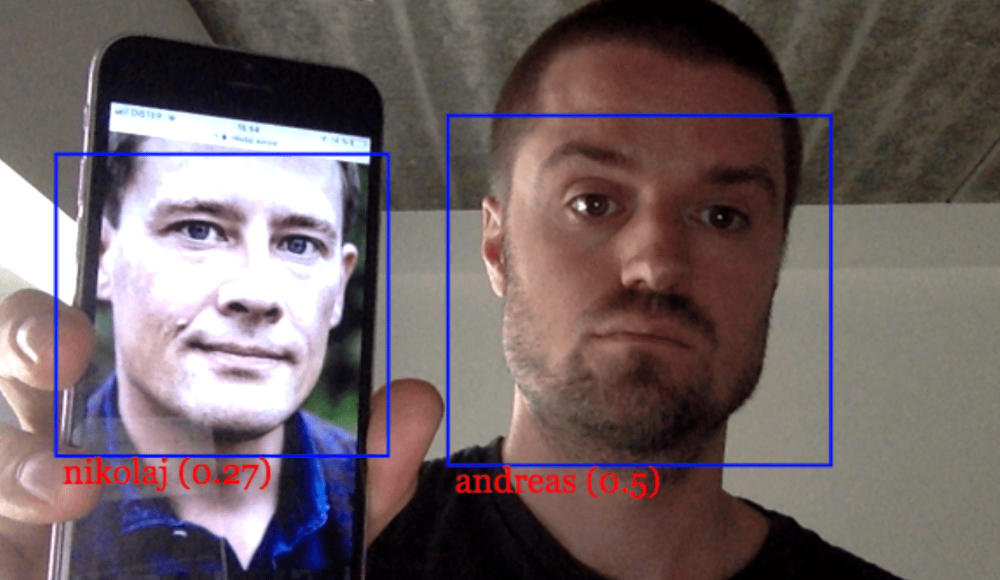
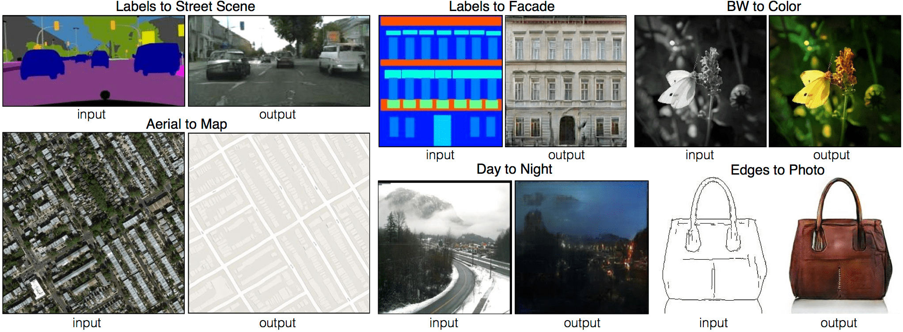
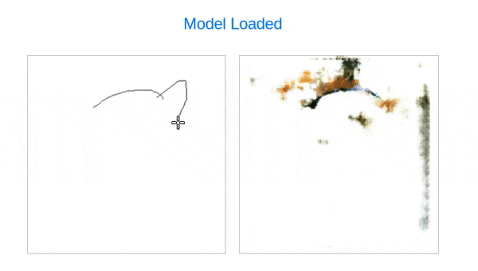

Machine Learning Workshop @ AndreasRef
0) Bias
- Hvilke risici for bias ser I i videoen fra WaakEyes?
Hvad tænker I generelt om den voksende bruge af "intelligente" kamerasystemer i butikker og på offentlige pladser?
Diskuter et par minutter i to og to, herefter kort fælles diskussion.
1) Teachable Machine
- 
2) Track din krop


3) Genkend ansigter og følelser
- 
- 
4) Tegn med hjælp fra machine learning
- 
- 

- Instruktioner: Tryk på linket ovenfor. Sørg for at sætte flueben i det boxen markeret med rød. Mal på lærredet til venstre med forskellige farver der repræsenterer forskellige kategorier. Tryk på -> pilen. Se dine resultater på lærredet til højre.

5) AI quiz
Problemer med at køre eksemplerne i din browser?
- Prøv at åbne dem i Google Chrome
- Kamera tilladelse i Windows 10: Tryk Start > Settings > Privacy > Camera. Sæt "Let apps use my camera" til "On". Sørg for at Google Chrome har tilladelse.
- Ældre computere with svage grafikkort eller computere hvor grafikkortet ikke er konfigureret korrekt vil ofte have problemer med at køre eksemplerne eller træne med hundredevis eller tusindvis af eksempler fra kameraet. Sker dette bør du skifte til en anden computer, eller forsøge om problemet forsvinder hvis du benytter færre træningseksempler.
Andre links
Kontakt Andreas Refsgaard
Website / Email / Facebook / Twitter / Instagram / GitHub / Vimeo